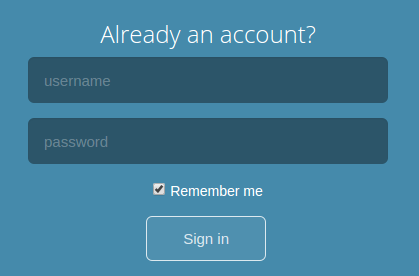
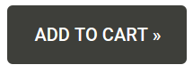
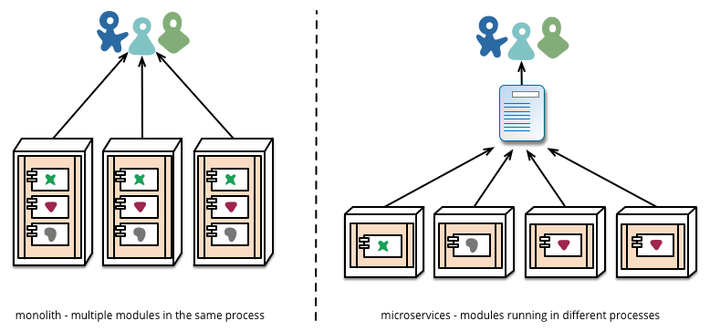

From SQL to NoSQL databases
Loïc Rollus
Geeks Anonymes - February 22, 2017About me
$whoami
Loic Rollus - "Software developer"
Currently: "Guardis (IT infrastructure - ComodIT.com)"
Previously: "GIGA ULg (Cytomine team)"
Web site: "http://loic.rollus.be"
Linkedin: "https://be.linkedin.com/in/loicrollus"
Geeks Anonymes (2013):
"Software Quality and Continous Integration with Cytomine"
From SQL to NoSQL databases
- Databases → DB Management Systems
- SQL (language) → Relational (model)
- NoSQL → Non-relational
From SQL to NoSQL databases
From Relational to Non relational database management systems
Table of contents
- Shopping app: presentation (1997)
- Relational (SQL) databases
- Shopping app: limits with relational (2017)
- Non Relational (NoSQL) databases
- Shopping app: NoSQL use cases
Beer Shopping

Belgium (1997)
Back to the past...
1997
- Relational: PostgreSQL, MySQL, Oracle...
Relational (SQL)
Beer
| Id (num) | Name (str) | Alcohol (dbl) | Brand (num) |
|---|---|---|---|
| 16 (P.K.) | Chimay Bleue | 9.0 | 36 (F.K.) |
| ... | ... | ... | ... |
Brand
| Id | Name | Location |
|---|---|---|
| 36 | Chimay | Scourmont |
| ... | ... | ... |
Schema, Normalization, Constraints
Relational (SQL)
Transactional ACID
BEGIN TRANSACTION
UPDATE account set amount = amount + 500 WHERE username = 'lrollus';
UPDATE account set amount = amount - 500 WHERE username = 'jfays';
END;
- Atomicity: all or nothing
- Consistency: only valid data
- Isolation: transaction do not affect each other
- Durability: commit = not lost
Robustness, Consistency
Relational (SQL)
Scale up / Scale out
Scale out
- Sharding: different data on different nodes
- Replication: same data over multiple nodes
- Master-slave: 1 m (rw), n sl. (r) sync ← SQL
- Peer-to-peer: n "equal" nodes (r/w)
Relational (SQL)
- Schema, Constraints
- Normalization, Join
- Transactional (ACID)
- Scale up (scale out with master slave)
- SQL
- ...
Belgium Beer shopping
Users requests / dataset size
More ram, upgrade, more disk...
Back to the futur...
2017
Belgium Beer shopping
World Beer shopping
World Beer shopping
Users requests / dataset size
...arggggggg!
Limits with relational
- Scalability
- Development
- user sessions: relational
- recommandations: relational
- shopping cart: relational
- catalog: relational
- ...
NoSQL
NoSQL: without SQL?
Non-relational: without relational model!
SQL VS NoSQL
- Relational: PostgreSQL, MySQL, Oracle,...
VS
- Key-Value: Redis, Riak, DynamoDB...
- Document: MongoDB, ElasticSearch, CouchDB,...
- Graph: Neo4J, InfiniteGraph,...
- Column: Cassandra, Hypertable, HBase,...
- Time series: InfluxDB, KairosDB,...
- ...
NoSQL
Most of them are:
schema- cluster friendly
acid- open-source
SQL- post 2000
- Relational: PostgreSQL, MySQL, Oracle...
- Key-Value: Redis, Riak, DynamoDB...
Key-Value
"16" = "Chimay Bleue"
- In memory key-value (e.g. Redis)
- Full distributed Key-value (e.g. Riak)
Key-Value In memory (Redis)

- In-memory database / on-disk persistence
- Fast / Light (empty instance: 1MB)
- Complex values: List, Set, Hashmap,...
- Replication (designed primarily as a single-server system)
Key-Value In memory (Redis)
Commands
- 175+ commands
- From GET and SET...
- ...to ZREMRANGEBYRANK and ZREMRANGEBYSCORE
- Lots of clients / many languages
Jedis jedis = new Jedis("localhost", 6379);
jedis.set("mykey", "Hello");
String value = jedis.get("mykey");
Key-Value In memory (Redis)
Use case: User session
Key-Value In memory (Redis)
Use case: User session
Key-Value In memory (Redis)
Use case: User session
//auth
redis.set(token,username)
//req
username = redis.get(token)
hset(token,"username",username)
hset(token,"validity","2017-02-22")
expire(token,7*24*60*60)
Key-Value In memory (Redis)
Use case: User session
- Fast (memory, socket)
- Simple (get/set)
- Complex (175+ commands)
- (Persistance)
Riak
Key-Value Distribued (Riak)

- Dynamo paper (Amazon)
- REST API
- Peer-to-peer replication
- Inconsistency
Key-Value Distribued (Riak)
Use case: shopping cart

- Add to cart even if failure
- Low latency
- Web app growth → add nodes
- Peak (e.g. christmas) → add and remove nodes
Key-Value Distribued (Riak)
Use case: shopping cart
- N: number of replica
- W: number of replica for successful write
- N-W: write fault tolerance
- R: number of replica for successful read
- N-R: read fault tolerance
Key-Value Distribued (Riak)
Use case: shopping cart
N=3, W=2, R=2
Key-Value Distribued (Riak)
Use case: shopping cart
- Fast, low latency
- P2P replication
- Easy to add/remove nodes
- Relational: PostgreSQL, MySQL, Oracle...
- Key-Value: Redis, Riak, DynamoDB...
- Document: MongoDB, ElasticSearch, CouchDB,...
Document store
row = document (json, xml,...)
{ id: 16, name: "Chimay Bleue",
brand: {name: "Chimay"}, alcohol: 9 }
- Schemaless
- Freedom, flexibility :-)
- Deal with nonuniform data :-(
- Schemaless → implicit schema
Document store (MongoDB)

- Document JSON (BSON)
- Lots of clients / many languages
- Replication / Sharding
- Indexing, GridFS (filesystem), Geospatial,...
Document store (MongoDB)
Sharding: split dataset
- car → read from cars collection
- car.engine → read from engines collection
- car.cockpit → read from cockpits collection
- ...
Complex join on multiple nodes
Document store (MongoDB)
Sharding: aggregate / DDD
Aggregate (Domain driven design)
Collection of related objects that we wish to treat as a unit
{
id: 16,
name: "Golf 2",
brand: {id: 2, name: "VW"},
engine: {name: "136-150 hp 2.0 16V", configuration: "1,984 cc"},
assembly: ["Wolfsburg", "Brussels"],
...
}
Document store (MongoDB)
Use case: Beers catalog
Document store (MongoDB)
Use case: Beers catalog
Document store (MongoDB)
Use case: Beers catalog
- + Only need to fetch 1 node, no join
- - Redundancy
- - Need to access root domain to read aggregates
- Eager/Lazy Materialized views
Document store (MongoDB)
Use case: Beers catalog
- Product page = document
- Sharding / replication
- Json (same as the API format)
- Search / index
- Relational: PostgreSQL, MySQL, Oracle...
- Key-Value: Redis, Riak, DynamoDB...
- Document: MongoDB, ElasticSearch, CouchDB,...
- Graph: Neo4J, InfiniteGraph,...
NoSQL Graph Database
source: neo4j.com
- Nodes (noun)
- Relationships (verb)
- Properties
NoSQL Graph Database
Neo4j

- Opensource
- Transactional (ACID)
- Scalability: master-slave / no sharding
- Drivers for popular languages / REST API
- Cypher (declarative)
NoSQL Graph Database
Use case: Beers recommendations
If customer1 bought same beers as customer2, recommend customer2 beers to customer1.
NoSQL Graph Database
Use case: Beers recommendations
CREATE (rm:Customer{username:'rmaree'})
CREATE (rh:Customer{username:'rhoyoux'})
CREATE (jf:Customer{username:'jfays'})
...
CREATE (o:Beer{name:'Orval'})
...
CREATE (rm)-[:BOUGHT ]->(cb)
CREATE (rm)-[:BOUGHT ]->(vt)
CREATE (rh)-[:BOUGHT ]->(o)
CREATE (rh)-[:BOUGHT ]->(vb)
CREATE (rh)-[:BOUGHT ]->(vt)
...
NoSQL Graph Database
Use case: Beers recommendations
match
(c1:Customer)-[:BOUGHT]->(beer1:Beer)
<-[:BOUGHT]-(c2:Customer)-[:BOUGHT]->(beer2:Beer)
where not (c1)-[:BOUGHT]->(beer2)
return ...
NoSQL Graph Database
Use case: Beers recommendations
match
(c1:Customer)-[:BOUGHT]->(beer1:Beer)
<-[:BOUGHT]-(c2:Customer)-[:BOUGHT]->(beer2:Beer)
where not (c1)-[:BOUGHT]->(beer2)
return c1.username as FirstPerson, c2.username as SecondPerson, beer1.name as
CommonProduct, beer2.name as RecommendedProduct;
NoSQL Graph Database
Use case: Beers recommendations
match (c1:Customer)-[:BOUGHT]->(beer1:Beer)
<-[:BOUGHT]-(c2:Customer)-[:BOUGHT]->(beer2:Beer)
with c1,c2,count(beer1) as NrOfSharedProducts, collect(beer1) as
SharedProducts,beer2
where not (c1)-[:BOUGHT]->(beer2) AND NrOfSharedProducts >= 2
return ...
NoSQL Graph Database
Use case: Beers recommendations
match (c1:Customer)-[:BOUGHT]->(beer1:Beer)
<-[:BOUGHT]-(c2:Customer)-[:BOUGHT]->(beer2:Beer)
with c1,c2,count(beer1) as NrOfSharedProducts, collect(beer1) as
SharedProducts,beer2
where not (c1)-[:BOUGHT]->(beer2) AND NrOfSharedProducts >= 2
return c1.username as FirPer, c2.username as SecPer, extract(x
in SharedProds | x.name) as SharedProds, beer2.name as RecomProd;
NoSQL Graph Database
Use case: Beers recommendations
- Simple request (cypher)
- Speed (no join)
source: neo4j.com
Conclusion
Conclusion
- User sessions: Redis
- Shopping cart: Riak
- Product catalog: MongoDB
- Recommendations: Neo4J
- Financial Data: PostgreSQL
- Search engine: Elasticsearch
Excessive (for the talk): take the best database(s)
Conclusion
- User sessions: PostgreSQL
- Shopping cart: PostgreSQL
- Product catalog: PostgreSQL
- Recommendations: Neo4J
- Financial Data: PostgreSQL
- Search engine: Elasticsearch
Conclusion
GOTO Microservices...
https://www.martinfowler.com/
Conclusion
SQL VS NoSQL: Polyglot Persistence
- + Best DB for each Use case
- + Scalability
- - Redundancy
- - More work for (Dev)Ops
3 NoSQL Admins walk into a bar...
...but they couldn't join a table.